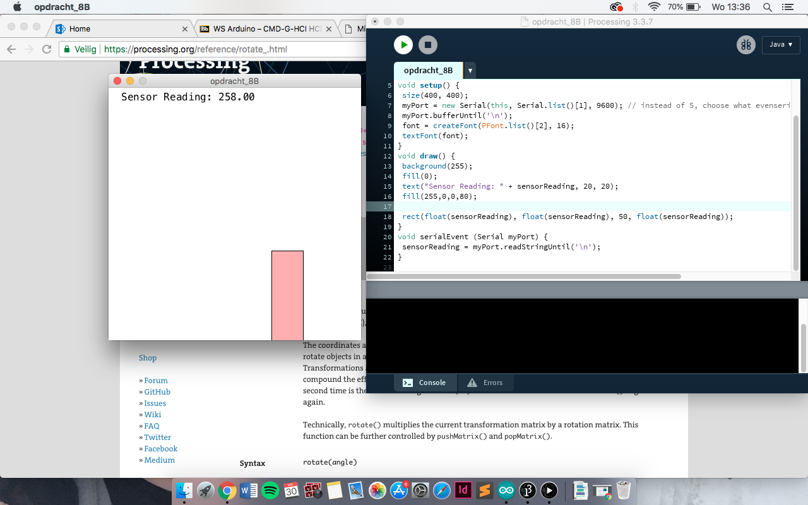
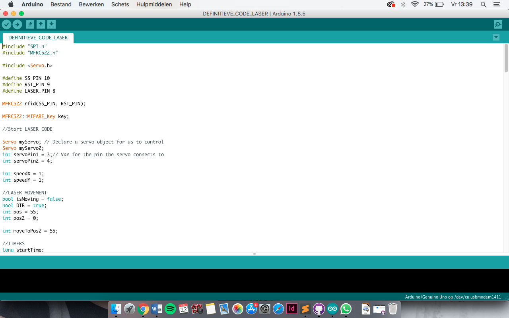
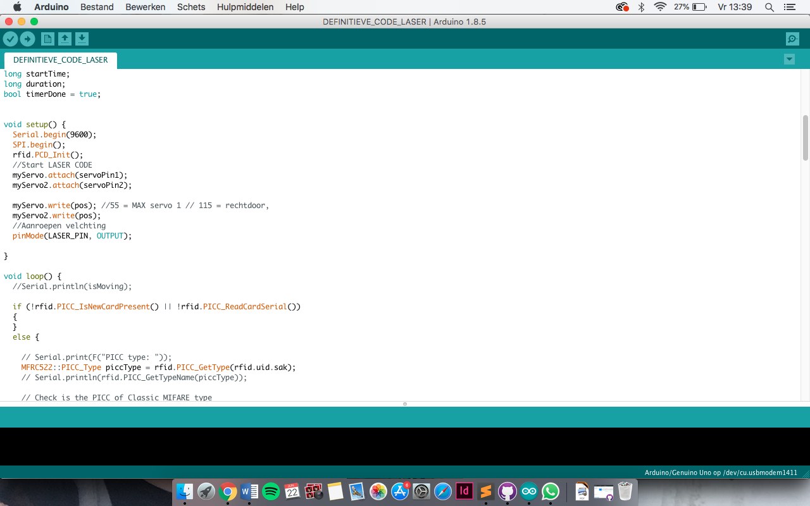
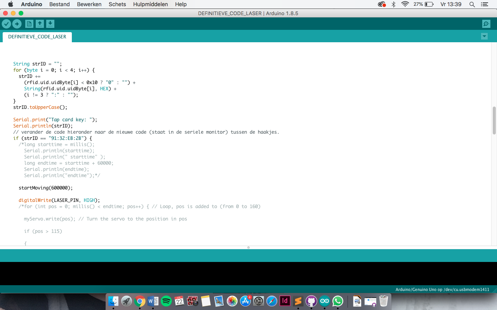
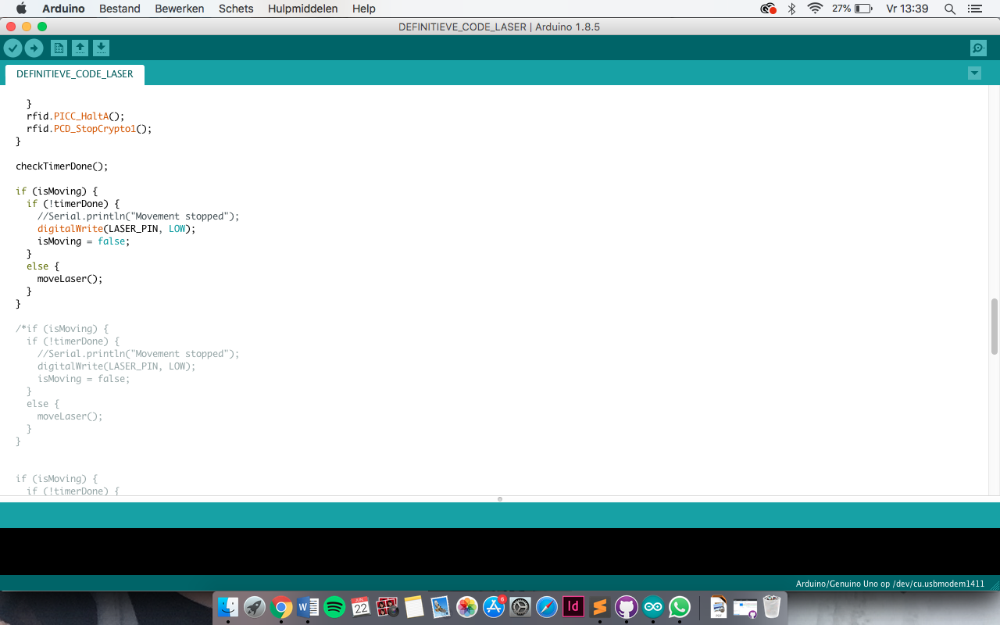
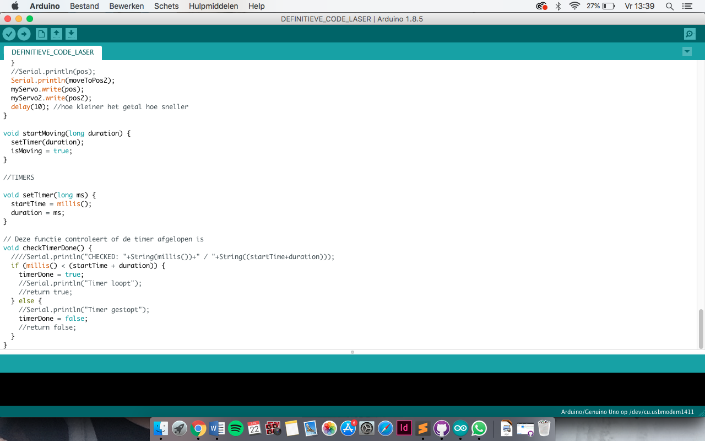

Met de Arduino kit kun je op verschillende manieren codes programmeren die ervoor zorgen dat de Arduino kit deze code gaat uitvoeren. Bij de verschillende opdrachten die ik hiermee gemaakt heb, zijn te zien hieronder. Per opdracht is de code getoond en een filmpje van de uitvoering. Bij deze opdracht was het de bedoeling de lampjes te laten knipperen. Het ene lampje moest twee keer zo snel bewegen als het andere lampje. In de code heb ik de verschillende input een waarde meegegeven. De ene waarde heb ik twee keer zo snel gemaakt als de andere. Dit stuur je op naar de Arduino en wordt hierop uitgevoerd.

Bij deze opdracht was het de bedoeling om de helderheid van de verlichting aan te passen. Hiervoor heb ik gebruik gemaakt van een for loop, die de helderheid van 255 steeds veranderd naar 0 en weer terug. Als de waarde 0 is, wacht de for loop 20 milliseconde en dat voert de code zicht opnieuw uit. Zo kun je ook zien dat de output van deze code aangestuurd worden op de lampjes die de groene en het gele lampje aansturen. Het gele lampje zit in 9 en het groene lampje zit in 10. Zo weet de kit waar hij de code naartoe moet sturen. In het filmpje kun je zien dat de helderheid om de beurt veranderd.

Bij deze opdracht was het de bedoeling om de lampen het tegenovergestelde van elkaar te laten doen. Als de ene lamp aan staat, moet het andere lampje uit gaan en andersom. Via het draaiwiel kun je dit proces laten gebeuren. In de code kun je zien dat de lampjes en het draaiwiel de output zijn van deze code en dat in de loop de waarde aan de lampjes wordt gegeven. Zo kun je zien dat de code van de lampjes tegenovergesteld van elkaar zijn. In het filmpje kun je zien dat als je aan het wieltje draait, dat de lampjes aan en uit gaan.

Bij deze opdracht is er gebruik gemaakt van een beweging sensor. In de code is te zien dat de sensor een waarde krijgt in een som. De waarde die daarin is geplaatst is afkomstig van de serial monitor van Arduino. Deze waarde geeft aan hoeveel ligt er binnenkomt op de sensor. In de code is er geschreven dan de lampjes moeten reageren op de beweging van de sensor. Zodra er veel licht op de sensor valt, worden de lampjes feller. Zodra er minder ligt op de sensor valt, wordende lampjes minder fel. In het filmpje is te zien dat dit gebeurt, alleen is het wel een beetje lastig zien omdat het erg licht was in de ruimte.

Met een beweging sensor kan je meer dan alleen lampjes laten knipperen. Je kunt er ook beelden van laten bewegen. Bij deze opdracht was het de bedoeling een vorm te laten veranderen met gebruik van een beweging sensor. Hiervoor heb ik een code gebruikt die ik al bij een eerdere opdracht heb gebruikt om de sensor op licht te laten reageren. Vervolgens heb ik een vorm gemaakt die dan reageert op de sensor. In het filmpje kun je zien dat het blokje veranderd van positie maar ook dat de afmetingen veranderen.
Bij deze opdracht is er weer gebruik gemaakt van lampjes, maar deze worden handmatig bedient met knoppen. Er zijn twee knoppen gekoppeld, die los van elkaar werken. Het was de bedoeling dat lampje gaat branden als er een knop wordt ingedrukt. Het maakt dan niet uit welk van de knoppen ingedrukt wordt, als er maar een knop wordt ingedrukt. De code die hiervoor gebruikt is, is zo verkleint dat de code zo kort mogelijk is geschreven. Deze code vertelt dat als er door de ene knop het lampje wordt ingedrukt dat als het andere knopje wel wordt ingedrukt, dat het lampje gaan branden. In het filmpje is te zien dat beide knoppen los van elkaar worden ingedrukt en dat dan het lampje gaat branden

Bij deze opdracht is er gebruikt gemaakt van een Servo motor. Met deze motor kun je een tandwiel laten bewegen. De opdracht was om een patroon te maken waarin de moto beweegt. Zo gaat het tandwiel de ene kant op er vervolgens de andere kant op. je kunt zelf kiezen in welk tempo dit gaat. In de code is te zien dat er verschillende for loops aanwezig zijn die allemaal een eigen waarde hebben. Deze waarde geeft aan hoever de tandwielen moeten draaien. De ene loop heeft < en > teken, die betekent dat het tandwiel de ene of de andere kant opdraait. In het filmpje kun je zien dat de motor het ritme van de code uitvoert.

Bij deze opdracht was het de bedoeling dat de Servo motor bestuurd wordt door knoppen. In de code is te zien dat doormiddel van een while de functie aan de knop wordt gegeven. Zo kun je zien dat als er een waarde van 180 is en er wordt op de knop gedrukt, dat deze terug gaat naar 0. Ook kun je zien dat als je de andere knop indrukt, dat de waarde dan van 0 naar 180 wordt gebracht. Dit betekent dat de tandwieltjes dus heen en weer bewegen. In het filmpje is te zien dat de code werkt. Er wordt op de knop gebruikt en het tandwiel beweegt de ene kant op. Als er op de andere knop gedrukt wordt, is te zien dat het tandwiel de andere kant op beweegt.

Met de Arduino kun je niet alleen lampjes laten schijnen en motors laten bewegen. Je kunt ook muziek maken met de Arduino kit. Dit doe je doormiddel van een luidspreker. In de code is doormiddel van een tone een waarde gegeven aan de toon die afgespeeld moet worden. De waardes die waar worden ingevoerd staan gelijk aan een bepaalde noot. Zodra je deze tone onder elkaar zet en elke noot verschillend maakt, wordt het een melodie. In het filmpje is te horen dat de noten achter elkaar worde afgespeeld en samen een melodie worden. Door de delay die aan de code is toegevoegd zorgt het ervoor dat er tussen de noten een kleine pauze zit, zodat de noten los van elkaar staan en het niet te snel gaat.

De opdracht was heel erg lastig. Het was de bedoeling dat de speaker geluid moest maken zodra deze bewogen werd. Ik heb het een aantal keer geprobeerd en kwam elke keer niet verder dan opdracht 13c. Hierbij moest je een code halen uit de serial monitor. Maar deze code kwam bij mij nooit tevoorschijn. De meter bleef bij mij maar lopen en stopte niet meer. Daarom ben ik op zoek gegaan naar iemand uit de klas die met mij wilde samen werken. Samen zijn we aan de sla gegaan en hebben we stap voor stap de code uitgevoerd. Gelukkig kwamen we wel verder en hebben we het voor elkaar gekregen om geluid uit de speaker te krijgen. Het was wel erg lastig, maar met veel hulp van klasgenoten die er wel verstand van hadden is het toch gelukt. In het filmpje is te zien dat de kit opgetild wordt en de speaker verschillende noten laat klinken.
    